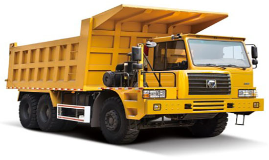
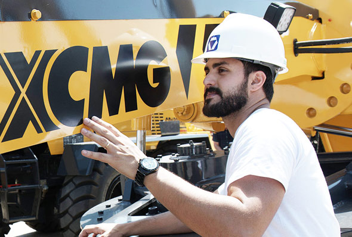

新闻与媒体
|
09 05,2016 |
【“互联网技术+平台型企业”】 徐工携手阿里“云端”布棋局 |
| 未来，是创新和共享的时代，对企业来说，倘若囿于一己之私、固步于三分之地，只能换来羸弱与消亡。只有用“大画幅”的眼光，站在更高的格局之上去创新、变革、分享，“联接”更多价值与资源，打造惠及多方的健康生态... |

|
09 05,2016 |
【“互联网技术+平台型企业”】 徐工携手阿里“云端”布棋局 |
| 未来，是创新和共享的时代，对企业来说，倘若囿于一己之私、固步于三分之地，只能换来羸弱与消亡。只有用“大画幅”的眼光，站在更高的格局之上去创新、变革、分享，“联接”更多价值与资源，打造惠及多方的健康生态... |
新闻与媒体
| 【“互联网技术+平台型企业”】 徐工携手阿里“云端”布棋局 | |
| 【“互联网技术+平台型企业”】 徐工携手阿里“云端”布棋局 |
徐工环卫产品首次进驻菲律宾
2016-05-13近日，从国家知识产权局传来喜讯，徐工环境2项发明专利获国家授权。此2项发明专利分别是一种侧装式垃圾车和一种可单边作业的洗扫车吸嘴及其操作方法。 徐工环...
徐工环卫产品首次进驻菲律宾
2016-05-13近日，从国家知识产权局传来喜讯，徐工环境2项发明专利获国家授权。此2项发明专利分别是一种侧装式垃圾车和一种可单边作业的洗扫车吸嘴及其操作方法。 徐工环...
徐工环卫产品首次进驻菲律宾
2016-05-13近日，从国家知识产权局传来喜讯，徐工环境2项发明专利获国家授权。此2项发明专利分别是一种侧装式垃圾车和一种可单边作业的洗扫车吸嘴及其操作方法。 徐工环...
了解徐工
| 徐州是怎么样的一家公司 | 徐州的技术创新 |
| 徐州的发展印记 | 徐州在全球的战略布局 |
| 徐州崇尚的企业文化 |
社会责任大爱无疆，铁骨柔情 |
了解徐工
- 徐州是怎么样的一家公司
- 徐州的技术创新
- 徐州的发展印记
- 徐州在全球的战略布局
- 徐州崇尚的企业文化
社会责任
大爱无疆，铁骨柔情

让梦想在草原上自由飞翔——记徐工挖机内蒙古客户郭永强“敕勒川，阴山下，天似穹庐，笼盖四野。天苍苍，野茫茫，风吹草低见牛羊”，一首豪放的民歌唱出了内蒙古大... |
让梦想在草原上自由飞翔——记徐工挖机内蒙古客户郭永强“敕勒川，阴山下，天似穹庐，笼盖四野。天苍苍，野茫茫，风吹草低见牛羊”，一首豪放的民歌唱出了内蒙古大... |